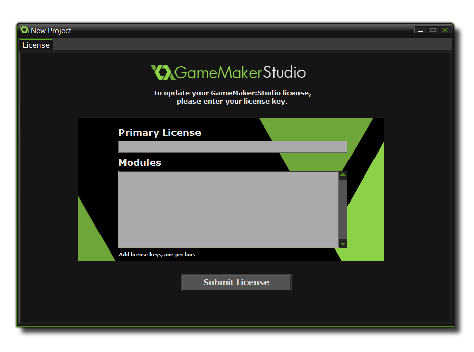

一旦你安装了你的版本的 GameMaker: Studio，第一次运行的时候你将会被提示输入许可证密钥 (除非你下载了 free version 或者你通过 Steam 购买了程序，这一步将会被跳过)。
授权文件也会通过你购买时使用时邮箱地址发送给你，如果你已经通过 My Account (我的帐户) 登录到 YoYo 游戏商店，它也会绑定到该帐户，你可以在任何有必要的时候取回它。如果你没有登录到 YoYo 游戏商店，这个邮件地址也会包含新帐户的详细内容，并且已经使用你提供的邮箱地址自动设定了新帐户。这些也可以让你从 YoYo 游戏网站找回你的 GameMaker: Studio许可证。一旦你已经完成了许可证的认证，就可以准备使用 GameMaker: Studio 了!
如果哪天你需要重新安装 GameMaker: Studio，可以在 here 找到最新的版本和所有可用的更新。
你有义务确认保存好邮箱地址和许可证密钥，重新安装 GameMaker: Studio 的时候将会用到它们。 
GameMaker: Studio 使用时本身并不要求联接互联网，它只是偶尔访问以保持许可证激活。如果很长的时间内你的电脑长期都不能联接网络，你可以从 YoYo 游戏网站下载 license check file，然后将自动更新系统指向它。如果你未能提供有效的授权文件，或者请求时没有联接到互联网，你的 GameMaker: Studio 副本将不能工作，直到解决这些问题。
注意: 如果你已经更新到了 GameMaker: Studio - Professional，这些额外的模块只能通过购买获得。
购买后，GameMaker: Studio 将出现许多导出选项：Windows 和 Mac OSX（如果是从 Steam 购买的程序还会包括 Steam 创意工坊的导出选项），以及Windows 8 (本地) 和 Windows 8 (JS)。额外的模块可以轻松地从 YoYo Games Checkout. 购买到。一旦到了那一步，你仅需要填写所需的信息 (邮箱地址和 GameMaker: Studio 基本许可证)，然后选择你希望添加的目标模块或模块。完后之成，点击 "Preceed (继续)" 将带你到支付页面以确认这次购买。最后一旦确认，你将获得一份新的许可证和邮件，并发送到你提供的邮箱里。
要使用这个许可证，你必须现在启动 GameMaker: Studio 并进入 "Help"，"Update License"，然后在适当的区域输入新的许可证。做完这一步后，重启 GameMaker: Studio，并享受你所购买的新模块的功能。
如果你是通过 Steam 购买的 GameMaker: Studio，你也能很容易的从相同的服务通道在线购买这些模块，并不需要许可证，因为 Steam 将处理这些细节。要访问可用的模块，必须运行你的Steam客户端，找到游戏库，右键点击 GameMaker: Studio 条目。从弹出的右键菜单你应该选择 View Downloadable Content (查看可下载内容)，它将打开应用 Properties (属性) 窗口，在哪里可以选择、购买并安装你需要的模块。
| Converted from CHM to HTML with chm2web Pro 2.85 (unicode) |